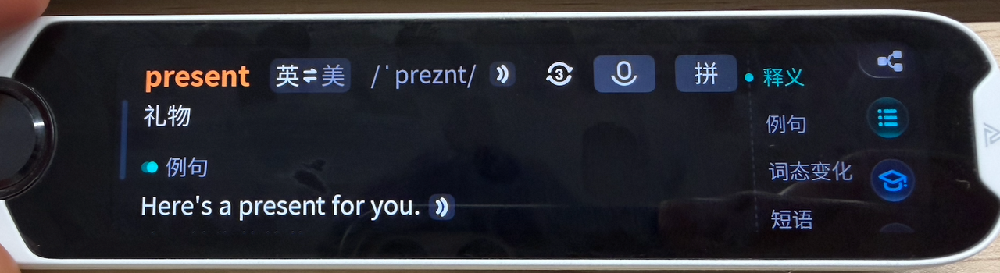
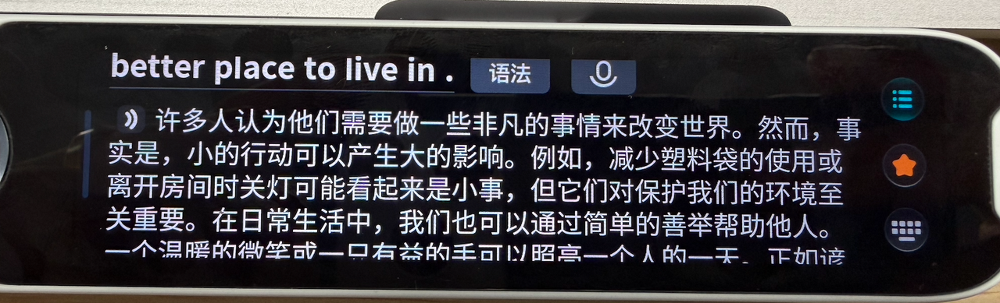

分屏设计 · 心灵驿站 · 句子讲解 —— 三大能力，重新定义智能词典笔的成长价值
在硬件参数与词库日趋同质化的当下，我们从「认知宽度、情绪温度、学习深度」三个维度突破
不只是屏幕大了一些，是认知宽度翻了一番
不止搞定学习难题，更安放成长小情绪
七大分层解析，扫清英语阅读障碍
不只是屏幕大了一些，是认知的宽度翻了一番
向下翻看释义、例句时，顶部的原词与音标已消失，容易忘记词头，产生"我刚在查哪个词"的困惑。
屏幕横向空间被大量留白浪费，释义和例句右侧大片空白，一屏可承载的内容有限。

长句中英对译时，看到译文却不知对应哪句原文，无法在同一视线水平内快速比对。

左侧固定 30% 锁定核心信息（单词、音标、发音）；右侧滚动 70% 展示词性、详细释义、例句。任何时候都能确认在查哪个词，降低认知负荷。
左右等宽，左原文右译文，按句对齐 + 联动滚动。一侧滑动另一侧自动跟随，实现"左右参照、视线零迁徙"。
查词阶段分屏提效，精读长文本时切换全屏沉浸阅读，兼顾不同学习阶段的诉求。
不止搞定学习难题，更安放成长小情绪
学业压力、人际困扰，很多小情绪不愿与家长老师说，需要一个安全的情绪出口。
空闲时容易胡思乱想、钻牛角尖，缺少正向引导和每日激励。
不清楚自己的性格特质和学习风格，难以找到适合自己的成长路径。
传统词典笔工具属性太强，只有知识点没有人情味，无法给到文化滋养和心理支撑。
向内安放情绪，向外正向引导 —— 克制化轻娱乐设计，解压不沉迷
一句有力量的话，打开新的思考角度 → 解决情绪积压，提供安全的情绪出口
星座寄语 + 多维状态评分 + 幸运指南 → 对抗精神内耗，注入仪式感与正向激励
校园版 MBTI，贴合学习生活场景 → 帮助了解自己，发现学习优势与成长路径
姓名内涵 + 姓氏起源 + 英文名推荐 → 增加人文温度，文化科普合规无迷信
坚守"学习工具为主、情绪陪伴为辅"，无过度娱乐化设计，文案人工逐句审核，全部适配中小学青少年心智认知。
七大分层解析，扫清英语阅读障碍
词汇扩容、阅读篇目加长、长难句占比提升，孩子翻看课本很难自主拆解长难句、吃透隐性考点。
试卷考题、教辅练习、课外读物里的陌生长难句，书本无详细注解，看不懂句子影响阅读。
课前预习 —— 对照课本扫描，解锁解析+单词卡+知识点+翻译+发音；课外刷题/阅读 —— 随手扫描陌生句子即时解析。
核心句型、高频搭配、隐藏考点
音标释义、搭配例句、配图记词
文本+短视频，抽象考点具象化
贴合课本语境的精准译法
规范发音，纠正读音误区
人工标注时态、句式结构
中高考同源测评，跟读打分
仿照线下老师课堂批注逻辑电子化标注重难点，图文视频多元讲解；内容严格对标现行新课标教材，剔除超纲偏难知识点。
分屏设计让大屏每一像素都产生价值，查词更高效、对照更直观
心灵驿站守护成长心绪，硬核学习力兼顾柔性陪伴力
句子讲解拆解阅读难点，从课前预习到课后复习全链路覆盖
一边是高效求知，一边是温柔治愈 —— 陪伴孩子成长的随身伙伴